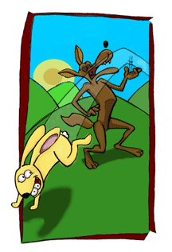

Introduction
My moment was marked with a red sports car. When you’re feeling trapped, buying a red sports car makes perfect sense. It embodies the illusion of freedom, and it provides cover. No explanation necessary, if you seem to be living the good life.
One day, while living my red-sports-car lie, I was invited to an art exhibit at the Asia Society in New York City. Mural-sized paintings by contemporary Australian aboriginal artists filled the galleries. Stunningly colorful, these works, called songlines, are thought to be one of the oldest art traditions in the world. Early examples date back thousands of years. Made of colored dots and dashes, the paintings appear to be enormous visual labyrinths, until you step back and note that the swirling patterns also create larger forms, often the shape of an animal. However, if you walk away at that point, thinking you’ve seen it all, you’ll miss the best part. Besides being visually fascinating, the paintings can be read as stories and used as maps.
In times past, aboriginal peoples traveled the harsh deserts of central Australia by memorizing their songlines—sacred songs that identified landmarks with stories of their creation. To this day, if you know the stories and sing them in order, you can find your way. I remember thinking—maybe, that’s my problem, I don’t know the stories that will carry me to the next waterhole.
Home, for me, is a place so small it doesn’t appear on most maps. My mother still owns the land that my family describes as being “just above Bone,” meaning several miles higher, into the hills of southwestern Idaho, than the town of that name. Four generations grew up there. Mine was the quickest to leave. I was nineteen when I set out to find life elsewhere. Somewhere along the way, I forgot that the land “just above Bone” is a storied place, as storied as the deserts of central Australia.
Name a place that isn’t.
The difference is that the descendants of Australia’s desert are engaged in a constant struggle to keep their story tradition alive, while I’ve been more inclined to think I’m better off without the baggage. For them, memory is a link to the dreamtime (the spiritual world). I have trouble recalling what I did yesterday. Before GPS, forgetting the way to the next waterhole was not an option for the aboriginal traveler. Go walkabout in the desert without the right songline, and you’ll be lost. Even with GPS, I’m often lost.
I needed my stories.
I can’t say why I thought that was the right answer. If I’d stopped to question it, I might have concluded that this new obsession was another red car, another way of driving around more serious issues. I didn’t question it, because I knew I had stories—good ones. Better yet, I knew that stories are always best when they’re not taken too seriously. In other words, this would be a perfect red-sports-car kind of adventure.
It was and it wasn’t.
My quest took me back to Bone, an obvious destination, from there I traveled farther than I might have imagined. I went from the deserts of Arizona to the islands of Denmark. Along the way, I met a climbing snake, tried my hand at making dump cake, and learned why every girl needs a horse.
Everywhere I went, I made the same request, “Tell me the family stories.”
Sometimes, it was assumed that I wanted a copy of the family genealogy. That wasn’t it. Nobody remembers names and dates without writing them down. I wanted the stories, true or not, that we never really forget. I wanted to understand the hold these stories have. How they shape us, guide us, sometimes trap us. What I’d missed was the power of stories. We expect our lives to turn out like the stories we’ve heard.
There was a time when I thought my job included teaching humility. I used to ask the students in my freshman composition classes to write an essay describing “happiness.” No one ever successfully completed that assignment. I didn’t expect success. It was a set-up that allowed me to expose the hazards of writing in cliché. While my students stumbled over old, hackneyed expressions (a small matter), it never occurred to me to engage them in a more serious discussion of happiness. I never questioned why most of us find it so difficult to describe the one thing we all say we want.
Family stories are similar. We seldom examine them. Seldom push beyond the surface. Never mind that we talk in stories all the time—over dinner, at work, on the phone, with friends, with strangers. We seem to regard our stories as just stories the way we think happiness is just happiness.
Worse than that, family stories get shrugged off, not only because they are just stories but because they’re the same old stories. We think we know them until we ask: Why that story? Why that story told that way?
Put simply, stories are how we make sense of the world. Everything else is just information. If you want the world to make better sense, tell better stories. If you want your life to have more meaning, examine the stories. It’s the stories that you need. Hard questions don’t have answers. They have stories.
The Story
In my family, we tell one story more than any other—the story of my Great Grandmother Sophia and the railroad she held hostage for the sake of love. When we tell this story, we like to emphasize that we’re not talking about stopping one or two trains. Our ancestor brought an entire railroad to a standstill.
Of course, there are several versions of this story, and every reason to believe it has gotten better over time. Stories usually do. Nevertheless, it seems to be based on a real incident. By that, I mean the facts that can be checked, seem to check. Not that it matters. True or false, our story is our story, and like most families, we secretly believe that our history reflects our character. Beyond common chromosomes, we think we share a stubborn, never-give-up determination that we credit for having gotten us through good times and bad. In short, we think we know who we are because of the story.
Here’s how I like to tell it . . .
Out on the American frontier, when people, like my family, still worried about outlaws, Indians, grasshoppers, and dust storms, my Great Grandmother Sophia got a job working for the railroad. She was fourteen years old and small. She weighed less than a hundred pounds. Size matters, because working for the railroad was no easy “town job.” She began as a cook’s helper and later became a cook—part of a crew of men and women who were laying railroad tracks through canyons and across the wide-open prairies. The year was 1879.
The job consisted of fixing dinner at night and breakfast the next morning in one place. Then, while the men were laying track, the women would load their tent kitchen onto mules and move—four, five, six miles down the roadbed—the distance the men were expected to get that day. At each stop, they unloaded their mules, set up camp, and had dinner ready by the time the men caught up with them. This was hard, backbreaking work, done six and a half days a week, in good weather and bad.
That, of course, is one of the places where we sometimes get hung up on the stories of frontier women—all that hard work—all the drudgery, dirt, and bitter loneliness. However, that’s not how my family tells “the story.” That’s not how Sophia told it herself.
I knew my great grandmother. I remember her talking about her railroad days with a sense of pride. She liked being outdoors, and she liked the idea that she had been part of something larger than herself, which was how she viewed her contribution to bringing the railroad to places it had never been before. What’s more, she was proud that she’d “earned her own way” from a young age, and proud that she could cook—really cook. In fact, the thing I remember most about her is her kitchen, and how it was always filled with the aroma of her breads and stews. She was famed for her pie.
At this point, “the story” is in danger of falling into cliché. Many of us have memories of grandmothers and cooking and old-style kitchens filled with wonderful aromas. It’s a memory that has come to mean “grandmother.” However, to the women of my great grandmother’s generation, being able to cook was considered an asset. The women of her generation found regular employment cooking in logging camps, mining camps, and railroad camps. They cooked on farms and ranches for threshing crews, haying crews, and sheepshearing crews. That might sound routine—rather everyday—until you realize that the work was also dangerous. On railroad crews, the cooks were exposed to the greatest danger. They had the food, and they were often out ahead of the men, at a time when marauding Indians were marauding mainly because they were hungry.
Besides that, the job had its own hazards. Sophia knew a girl, her age, who was crippled when one of the mules fell on her and another who was blinded when one of the stoves exploded. Those tragedies were felt keenly, because the women working on these crews often formed extremely close friendships in as much as they were constantly “watching out for each other.” That, of course, is a polite euphemism for that fact that one occupational danger was from the men on those same crews “who might not be gentlemen” or “might forget themselves” while working in remote places. Then there were more general hazards—sudden storms that could lead to exposure and pneumonia. Bad water that sometimes caused whole camps to come down with typhoid fever. The list goes on and on.
However, none of those dangers matched the raw, unregulated competition between rival railroads that sometimes led to two companies simultaneously laying track through the same narrow canyon. The company that finished first got paid. The other got nothing. In that race, both company’s crews were often guarded by armed men, who hardly needed an excuse to start shooting. What’s more, since everyone knew that crews worked best on full stomachs, kidnapping the competition’s cooks was considered fair game, if not “fair sport,” another euphemism of that day.
The summer that I remember Sophia best was the summer when she was in her nineties and I was nine. It’s an indication of her character that, even as a child, I had no difficulty connecting the old woman I knew with the young girl I kept hearing about. At ninety-plus years of age, she was still spry and quite feisty enough to make me believe she was capable of handling anything.
According to the story, Sophia worked at her job several years as various stretches of railroad were added across what is now northern Utah, southern Idaho, western Montana, eastern Oregon, and parts of Wyoming. She was still young, nineteen years old, when she fell in love with one of the men who were laying track—a foreman on one of the crews. Seemingly they had a lot in common. They were both first generation Americans, children of Danish immigrants who’d crossed the prairie in covered wagons to settle frontier towns in the high desert of the Great Basin. His name was George Nielsen, and, when he proposed marriage, she agreed that she would become “Mrs. Nielsen”—the name she would be called most of her life. However, she attached one condition. Before they could set a wedding date, she had to collect her back pay.
The railroad company she was working for was having financial difficulties. As a result, everyone was owed considerable back pay. She was owed more than a year’s worth. What to do about that situation became the young couple’s first disagreement. George doubted that Sophia would ever collect what was due her. Most of the so-called “skilled men,” like him, would eventually settle for less than what they were owed. That was simply how it was. As a lowly cook, she’d be lucky to get anything. He wanted her to forget the money and come away with him. Together they would make-do on hard work.
Sophia had great respect for hard work—she’d certainly done her share—but she was of the opinion that getting ahead took more than “pure hard work.” She’d been poor all her life. She was not going to start her married life with just the clothes on her back. On that point, she was adamant. She would marry George when she got her back pay and not one day sooner.
Word of the young couple’s impasse spread up and down the railroad lines. In the five years that she’d worked with various crews, a great many railroad workers had met and come to like Sophia. More to the point, they knew she had a mind of her own. In fact, most of the men were not betting on George being able to change her mind. Soon the story of the young lovers and their stand-off changed to sympathy for George’s plight. Then sympathy changed to action.
The strike started when the men in the camp, where Sophia was working, quit early one day for her sake. Once started, the strike spread quickly. Next day, it had jumped to two more camps. Three days later, it had involved several more camps. Men, who were laying track in three directions, simply put down their tools and refused to go on—not because they hoped to get their own pay—but because they wanted to see Sophia married in style.
The railroad bosses had another idea. They fired her. Without an easy alternative, they must have thought that she’d give up, get married, and move on with her new husband. If so, they were wrong.
The same betting men, who weren’t putting any money on George, weren’t putting any money on the railroad bosses either. Sophia stood her ground, the men refused to return to work, and the strike continued to spread. Because the railroad bosses got stubborn, the strike went on much longer than anyone might have imagined in a situation where no one got paid unless they laid track fast and finished first. However, in the end, it was the railroad bosses who gave in. They paid Sophia, and she started married life in style. It is said that her wedding included an orchestra that played all night and guests who danced even longer “when they had to whistle their own tune to keep celebrating.”
Sophia and George’s back wages, combined with her savings, were enough for her and her husband to buy one hundred and sixty acres in southeastern Idaho. Those acres were the beginning of a sheep and cattle ranch that would include tens of thousands of acres by the time she died—by the time I knew her.
My Grandma Melba, whom I affectionately call “Auntie Mame in Boots,” ran the ranch after her. Now my mother is responsible for the largest remaining piece, which is still several thousand acres large. Meanwhile, I live in a Colorado suburb where the wide sky and mountain backdrop are often obscured by Denver’s smog. Being stuck in traffic might tempt me to forget my heritage if it weren’t for that story. It hangs over my life thicker than smog—a fact that was recently brought to my attention.
One of my students was working on an autobiographical novel about three generations of women—mothers and daughters—who seemed to do nothing but increase each other’s misery. It was a well-written, if melancholy, book. However, I didn’t understand the source of all that misery. What’s more, I suspected that subsequent readers would feel a similar discomfort, so I asked the question I get around to asking most of my students sooner or later: “Why do you want to write this story?”
It’s a deceptively simple question that I usually have to ask several times, before getting down to the core. Stories don’t happen. We choose them and why we choose a certain story can make all the difference in how we tell it. The “how” was the problem. I wanted my student to rewrite the story in a way that would offer her readers a ray of hope, some reason to keep reading.
This is the exceptional student. She knows why.
“I wanted to write this book when I realized that all the women in my family have married men we don’t love,” she told me. “I mean, God forbid that one of us should actually break the cycle.”
I was startled to hear that, not because she was so clear-eyed about her central narrative, not because of the expressed bitterness (that was in her book), and certainly not because I didn’t believe her. Families run these kinds of patterns all the time. I was startled because I’d recognized some similarities between the generations of her family and my own. Actually, I thought the similarities were nearly universal. Except for the particulars, she could have been writing about almost any set of mothers and daughters, mine included, with one exception. I can’t imagine the women in my family settling for less than love, not because we have perfect outcomes, but because we tell love stories.
My Grandma Melba—the one I call “Auntie Mame in Boots”—met Sophia’s youngest son at a summer dance. She was sixteen, an orphan living with her older sister, and desperately in need of a knight in shining armor. It just happens that he was riding a white horse. If that sounds too much like a fairytale, all I can say is that some of the other details are not quite so princely.
All that next fall and winter, she watched for him and ran out to greet him whenever he rode past her place. Usually he was on his way to pick up a wagon load of beet pulp, a by-product of processing sugar beets that is fed to livestock in winter. Unfortunately it is a notoriously fragrant by-product. Melba teased him about courting her while “smelling worse than vinegar.” In turn, he accused her of liking his horses better than she liked him. By that time, Sophia and her family had prospered. They were known as “The White Horse Nielsens” because even their wagon horses were light-colored grays, notably well-bred.
Evidently he was not the only one to notice that Melba had an eye for a good horse. The neighbors had begun to talk. In their minds, there was also some question as to whether she loved the man or his horses more. Within the family, however, there has never been a question. Any woman who can’t love both wouldn’t be considered worthy of the family name. In fact, we usually tell this story with a sense of mockery, as if pitying those poor neighbors, who didn’t seem to understand that any woman in her right mind would always choose both.
Supposedly my father proposed to my mother in the fourth grade, and there was never anyone else for either of them. We have a picture in the family photo album of the two of them and their fourth grade class. Nothing out of the ordinary, it’s a school picture—three rows of 1930s schoolchildren lined up on the steps of their schoolhouse. Everyone is looking at the camera except my dad. He has taken a step back and cast a sideways glance at my mother, who’s standing next to him. It’s such a fun, sweet picture, that you want to believe the story of their fourth-grade love. On second thought, the picture is too perfect. You have to wonder which came first, the story or the photo?
With that in mind, I asked my aunts, one by one, if my mother or my father had ever been interested in anyone else. They claim not. So, what can I say? Either the story is true, or the story has been repeated so many times, it has replaced memory.
Stories are that powerful.
However, I got nowhere explaining this to my student. She insisted that she was telling her story “the way it was.” Any modification would “be a lie.” As our conversation continued, I realized she and her family took pride in the belief that they lived on a bedrock of reality. No fairytales for them. By implication, my student was suggesting that my history was mostly fairytale. Maybe so.
Here’s the sad part of my parent’s story.
My father served in World War II. Besides having his feet frozen in the Battle of the Bulge, he was one of the first paratroopers to jump into Germany, across the Rhine River. I’m told that the survivors of that jump, few in number, sat under a bridge one day and talked about whether any of them would get out alive. In a sense, none did. It is the unanimous opinion of the family that my father “never got over the war.” To make a long story short, my mother married a young man who was different from the one she fell in love with, when they were both ten years old. Sophia’s love story didn’t end like a fairytale either. She was a widow longer than she was married. In both cases, however, those are not the stories that we choose to tell most often.
In my family we have stories that we call, “Oh Dear Me’s.” As a child, I was allowed to tell an “Oh Dear Me,” once, as a way to rant against the unfairness of the world, but I was never encouraged to repeat one. The family attitude was that nothing would be accomplished by such a re-telling, except to wallow in self-pity.
I know another family that handles hard times by referring to them as memories. “We’ve just made a memory,” they’ll say in the face of some new setback. It’s their way of creating an emotional safety net. According to their scheme of things, you have no way to lose. No matter what happens, you’re always richer in memories.
Once when I had an occasion to spend several weeks in Ireland, I watched a mother and her young daughter stop frequently at the graveyard across the street from where I was staying. Turns out they were visiting the grave of the child’s sister, her twin. The mother seemed to think it was important for the living child to share her “memories,” almost daily, with the stillborn sister. When I heard that story, I couldn’t help wondering how deeply the living child would be affected by that ritual. Would she feel the burden of living for two? Or would she come to think that she was luckier than most because she had an unseen sister to share her life? Either way, she would not escape the story of her birth.
None of us do.
We can run, so to speak, but we can’t hide. We can embrace, reject, rise above, or change the way we tell our family stories, but we can’t avoid them. In fact, unless we make a conscious choice, these stories have a way of becoming tape loops.
“We are the White Horse Nielsens.”
“We don’t tell Oh Dear Me’s.”
“We stop trains.”
“Yeah, right, and how many trains have you stopped lately?” my student asked when I got to this part of my argument.
Exactly.
For me to dismiss her story as an elaborate “Oh, Dear Me,” makes as much sense as thinking I have the family formula for stopping the world. In fact, you can argue that her narrative has an advantage over mine. In our culture, when a woman marries the man of her dreams, she’s supposed to live happily ever after.
My parents had one perfect moment. Right after he returned from the war, my father took my mother to the local Saturday night dance. He was still in his uniform. She was flushed with the happiness of having him home. When he took her in his arms and they started to dance, everyone else stepped back and let them have the floor. Then, when the dance was over, everyone applauded.
Moments like that are rare.
The women in my student’s family have never had to deal with the disappointment that inevitably follows a moment like that. Because they tell their stories differently, because they emphasize that they don’t marry for love, they never have to wonder what happened to the fairytale ending. They know what’s making them unhappy.
We’re all looking for escapes. If we meet the right man, or write a best-selling novel, or win the lottery, then everything will be fine, we tell ourselves. In truth, we mount one obstacle only to discover another. We land the perfect job, only to discover that the real challenge is doing the job. We marry the person we love, only to find that staying in love requires a whole new set of skills. There are no fixes. The Apocalypse is an allegory. Life goes on, which is why we need our stories. Collectively, they are the guide for going on. A good guide does not create the illusion of a problem-free road ahead. Rather, it should offer the generations that follow a hint at the skills that have served before.
A hundred years ago, there was a legendary “tie yourself down” stretch of railroad along Beaver Canyon, one of the places my great grandmother worked. The road was so rough, a crew was stationed there with the sole purpose of cleaning up the box cars that tipped over and smashed on the rocks below. “Tie yourself down,” meaning prepare for a rough ride, is a phrase I whisper, whenever I needed to give myself courage. I did that long before I knew the term probably originated with my family’s railroad background.
Most of us have no idea how deep the stories go. Most of the time, we never pause long enough to question our family’s way of describing the world. “Tie yourself down,” we say and go on like that’s the only way.
I happen to have grown up in a place where the wind blows across an ocean of emptiness, an unrelenting sea of sagebrush that even charitable visitors describe as “dreary.” That’s a landscape you have to learn to love. The same can be said of my family.
Of all families.
And all their stories.
Nevertheless, we need them.
Families use stories to cover the important questions, like what really matters, who we are, and what we can expect from life and each other. Even my student came around to the idea that her family had created an unusually strong, if unhappy, bond between the generations of their mothers and daughters partly because their central narrative didn’t allow anyone else in.
For whatever reason, my family made a different choice. To hold a family together, we think you need a good love story. Therefore, when my husband and I talk about ourselves, we tell the “Porche story.”
My husband-to-be courted me in a brand-new Porche 912. I didn’t know much about cars at the time, still don’t. My excuse is growing up on that ranch in Idaho. On a ranch, you drive the kind of vehicles that handle dirt roads and lots of dust. Old pickup trucks, mainly. Of course, I appreciated the new car shininess and the new car smell, but I had no idea that a Porche was more than just another German-made car. I thought it was just a flattened version of a Volkswagon.
That is, until that fall when I went back to college. The first weekend, when he drove up in front of my apartment, my roommates’ mouths dropped. “He drives a Porche?” they asked in near unison. I nodded, too embarrassed to admit that I didn’t know I was supposed to be impressed.
Now, when I tell the story, I always add that whatever impressed me, it wasn’t his car.
That story, of course, is not the sum of our relationship. It’s more. Over the years, that story has deepened and distilled until there are times when “Honey, you don’t need a Porche” is enough said.
I have a friend with ears that stick out. The ears come from his father’s side of the family. He and his father shared something else—a story that his father told him only when his mother wasn’t around. According to the story, he’d been born with his mother’s flat ears, but his father flipped them up while he was a baby, still in the hospital, because he wanted his son to be one of them. That story gave my friend such a sense of belonging that it got him through years and years of childhood teasing. He was nearly grown before he realized that the story couldn’t be true. It was just a story. Only stories are never “just stories.” To this day, my friend feels closer to his father’s family than his mother’s. He still thinks of himself as “one of them.”
My husband and I might have picked a different story to tell of ourselves if we had been trying to fit into a different family tradition. However, in our case, it feels fine to be “one of them.”
What if we want to change our stories?
In oral traditions, across the world, when a hero returns from some life-altering experience, the story told, and the hero is given a new name to signify that he or she has become a new person with a new story. In other words, there is a storied tradition for changing our story.
My great-grandmother could have told her story as hard work and hard times. She saw her share of both. It’s not easy to stop trains and build a ranch. Instead she framed it as a love story with different results

“Rabbit stole my eyes,” Coyote said. “If you help me catch him and get my eyes back, I’ll give you a big, big reward."
--from Coyote's Eyes Chapter
Table of Contents
The Story
—Every family has a central narrative.
Deep in Sheep
—Secret lives/lies.
No Matter Where You Roam
—The emotional baggage.
Ten Thousand Acres Above Bone
—A clichéd story is a dead story.
My Aunt Laura’s Climbing Snake
—Stories happen when we need them.
A Kindness A Day
—It’s all about “the little things.”
Coyote’s Eyes
—Fairies, trolls, and talking animals.
Because of Their Great Faith
—Standing on the sacred ground of religious stories.
Different Ships
—Stories are the stuff of immigrant dreams.
My Father’s War
—War stories are personal.
The Family Photo Album
—A picture without a story is worthless.
“Happily Ever After” Is a Long, Long Time
—If you don’t have a story . . ..
Our Mother’s Stories
—Why are these so hard to tell?
The Road Back
—Returning to “the old country.”.
A Storyteller Doll of My Own
—“Tell me a story of WHO you are . . .”
This book is under construction. Want to know when it's available?
Ask to have your name added to the e-mail list.